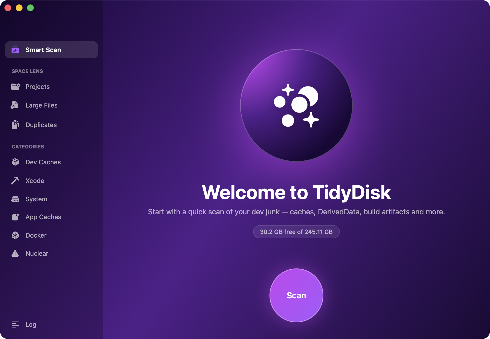

TidyDisk finds the gigabytes hiding in Xcode DerivedData, node_modules, simulators, package-manager caches and forgotten projects — and cleans them safely.

Detects the dev tools installed on your Mac — Xcode, npm, CocoaPods, Gradle, Docker, Homebrew — and only scans what's actually there.
Finds every project on your Mac and shows what its build artifacts weigh. Clean node_modules and build folders, or archive whole projects to GitHub or iCloud first.
Surfaces forgotten multi-gigabyte files and duplicate downloads. Deletions go to Trash, so nothing is ever lost by accident.
Free-space at a glance, one-click scans, and an optional weekly scan that notifies you when junk piles up again.
Safe caches are pre-selected. Aggressive and nuclear options — like deleting all node_modules — always require an explicit opt-in.
A real SwiftUI app, not Electron. Universal binary for Apple Silicon and Intel, a few megabytes on disk.
Download the zip and open it — it unpacks to TidyDisk.app.
Drag TidyDisk.app into your Applications folder.
Open it and hit Scan. It's notarized by Apple, so it opens without warnings.